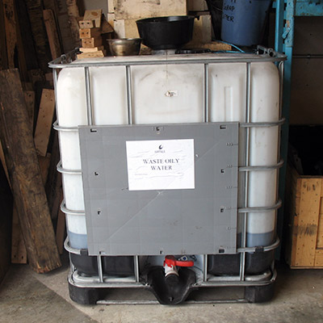

Hazardous Waste
D&K provides comprehensive hazardous waste management expertise which can be tailored to suit the particular needs of your organization.
D&K provides hazardous waste management expertise and experience in:
- Available treatment, storage and disposal technologies and facilities, and assessment of preferred options
- Regulatory requirements in various jurisdictions and compliance assessment procedures
- On-site treatment procedures and standards, and evaluation of requirements for off-site disposal
- Inventory, reporting and handling requirements for specific wastes
- Site selection procedures and evaluation processes for treatment and disposal facilities
- Site-specific training related to management practices at particular locations
- Development of Hazardous Materials Management Plans to suit facility-specific and regulatory requirements

Waste Management
Providing professional hazardous waste management advice.